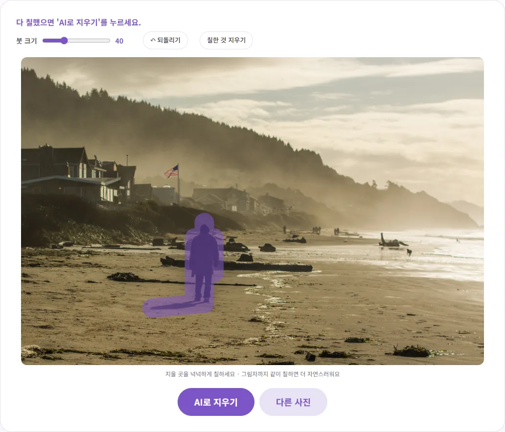
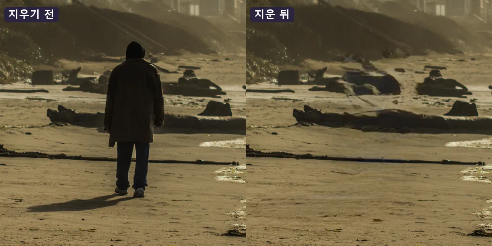
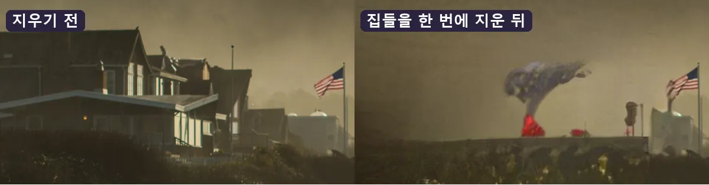

여행 사진 속 지나가는 사람·전깃줄, 어떻게 지울까요?
멋진 풍경을 찍었는데 하필 모르는 사람이 지나가거나, 하늘에 전깃줄이 가로질러 아쉬웠던 적 있으시죠? 이 글에서는 이런 것들을 붓으로 칠해서 지우는 방법과, 자연스럽게 지우는 요령, 그리고 AI가 잘 못하는 경우까지 직접 해 본 결과로 알려 드릴게요.
AI 지우개는 어떻게 지우는 걸까요?
사진에서 무언가를 지운다는 건, 사실 그 자리를 '원래 뒤에 있었을 법한 모습'으로 새로 그려 넣는 일이에요. 카메라는 사람 뒤에 가려진 모래나 하늘을 찍지 못했으니까요. AI는 칠한 부분 주변의 색과 무늬를 보고 그럴듯하게 이어 붙여요. 그래서 주변이 단순할수록 감쪽같고, 주변이 복잡하거나 지울 부분이 클수록 티가 나요. 이 원리를 알고 나면 어떤 사진이 잘 되고 어떤 사진이 어려운지 미리 짐작할 수 있어요.
벤토툴 사진 속 물체·사람 지우기는 이 작업을 내 브라우저 안에서 해요. 사진이 서버로 올라가지 않으니 가족 여행 사진처럼 남에게 보내기 싫은 사진도 편하게 쓸 수 있어요. 처음 한 번은 AI 모델(약 28MB)을 내려받느라 시간이 조금 더 걸리고, 그다음부터는 브라우저에 저장된 걸 써요.
기본 순서: 칠하고, 지우고, 확인하기
- 사진을 올리세요. 긴 변이 4096픽셀보다 큰 사진은 4096픽셀로 줄여서 작업하고, 저장도 그 크기로 돼요.
- '붓 크기'를 지울 물체에 맞게 고른 뒤, 지우고 싶은 부분을 칠하세요. 칠한 곳은 보라색으로 보여요.
- 'AI로 지우기'를 누르세요. 몇 초 뒤 칠한 자리가 주변 배경으로 채워져요.
- '누르고 있으면 원본' 버튼을 꾹 누르면 지우기 전 모습이 보여요. 손을 떼면 다시 결과가 보여서 바로 비교할 수 있어요.
- 마음에 들면 '저장'을 누르세요. 남은 자국이 있으면 그 부분만 다시 칠해서 한 번 더 지우면 돼요.

직접 해 보니, 위 사진에서 사람과 그림자를 칠하고 지우는 데 그래픽 가속이 켜진 크롬에서 약 1.6초, 그래픽 가속을 끈 상태(CPU)에서 약 3.6~4초가 걸렸어요. 처음 쓸 때는 AI 모델을 내려받는 시간이 더해져서, CPU 상태 첫 실행은 약 13초였어요.

자연스럽게 지우는 요령 5가지
1. 붓은 물체보다 조금 크게
붓 크기는 6부터 120까지 고를 수 있어요. 숫자는 화면에 보이는 붓의 지름이에요. 사람처럼 덩어리가 있는 물체는 몸 폭보다 약간 큰 붓으로 테두리 바깥까지 넉넉하게 칠하세요. 테두리를 딱 맞춰 칠하면 물체의 윤곽선이 희미하게 남기 쉬워요. 반대로 전깃줄처럼 가늘고 긴 것은 작은 붓으로 선을 따라 한 번에 그으면 돼요. 전깃줄 사진에서는 붓 크기 14로 줄 세 가닥을 따라 그었어요.
2. 그림자와 반사도 같이
사람만 지우고 그림자를 남기면 '아무도 없는데 그림자만 있는' 이상한 사진이 돼요. 발밑 그림자, 물에 비친 모습까지 함께 칠하세요.
3. 한 번에 크게보다 조금씩 여러 번
여러 물체를 한꺼번에 칠하기보다, 하나씩 지우고 확인하는 게 결과가 좋아요. 지운 결과 위에 다시 칠해서 이어서 지울 수 있고, 마음에 안 들면 '되돌리기'로 바로 앞 단계로 돌아가면 돼요. 되돌리기는 최근 20단계까지 기억해요.
4. 남길 물체에는 붓이 닿지 않게
전깃줄을 지울 때 처음에는 줄을 전봇대 꼭대기까지 칠했더니, 전봇대 윗부분에 검은 얼룩이 생겼어요. 그래서 되돌리고 전봇대 조금 앞에서 붓을 멈췄더니 하늘의 줄은 깨끗하게 사라지고 전봇대는 그대로 남았어요. 남기고 싶은 물체와 맞닿은 짧은 구간은 그대로 두거나, 아주 작은 붓으로 따로 지워 보세요.
5. 확대해서 확인하기
휴대폰 화면에서는 멀쩡해 보여도 크게 보면 경계가 번져 있을 수 있어요. 저장하기 전에 '누르고 있으면 원본'으로 여러 번 비교하고, 저장한 파일도 확대해서 한 번 더 보세요.
잘 되는 사진, 어려운 사진
| 상황 | 결과 예상 | 이유 |
|---|---|---|
| 하늘을 가로지르는 전깃줄 | 잘 돼요 | 가늘고, 주변이 단순한 하늘이에요 |
| 모래사장·잔디 위의 사람 한두 명 | 대체로 잘 돼요 | 주변 무늬가 반복돼서 이어 붙이기 쉬워요 |
| 바닥의 쓰레기, 얼룩, 작은 표지판 | 잘 되는 편이에요 | 크기가 작아서 채울 부분이 적어요 |
| 사진의 큰 부분(건물, 무리 지은 사람들) | 어색해요 | 참고할 주변이 부족해서 뭉개지거나 엉뚱한 모양이 생겨요 |
| 얼굴, 글자, 무늬가 반듯한 타일·창문 | 어려워요 | 사람 눈이 작은 어긋남도 바로 알아채요 |
큰 영역이 얼마나 어려운지 직접 시험해 봤어요. 해변 사진 왼쪽의 집 여러 채를 가장 큰 붓으로 한꺼번에 칠하고 지웠더니, 집은 사라졌지만 그 자리에 정체를 알 수 없는 얼룩과 엉뚱한 색이 생겼어요. AI는 칠한 부분 주변을 잘라서 처리하는데, 지울 부분이 크면 참고할 배경이 부족해지기 때문이에요.

이럴 때는 사진을 잘라내는 쪽이 더 나을 수 있어요. 지우고 싶은 것이 사진 가장자리에 있다면 이미지 자르기로 그 부분을 잘라내는 게 가장 깔끔해요. 얼굴은 지우는 것보다 흐리게 가리는 게 자연스러운 경우가 많아요. 다른 사람 얼굴을 가리는 방법은 사진 속 얼굴 흐리게 가리기에 정리해 두었어요.
그래픽 가속이 있으면 얼마나 빨라질까요?
이 도구는 컴퓨터의 그래픽 기능(WebGPU)을 쓸 수 있으면 그걸로, 안 되면 CPU로 AI를 돌려요. 지우는 동안 상태 줄에 '(그래픽 가속)' 또는 '(CPU 모드라 조금 걸려요)'라고 표시돼서 어느 쪽인지 알 수 있어요. 같은 PC에서 두 가지를 모두 재 봤어요.
| 사진 (작업 크기) | 그래픽 가속 | CPU |
|---|---|---|
| 해변의 사람 (4096×2730) | 약 1.6초 | 약 3.6초 |
| 하늘의 전깃줄 (3881×2778) | 약 1.6초 | 약 4.0초 |
모델을 받은 뒤 기준이고, 기기 성능에 따라 더 걸릴 수 있어요. 구글 크롬 개발자 블로그에 따르면 크롬은 113 버전부터 윈도우·맥OS·크롬OS에서 WebGPU를 기본으로 켰어요. 오래된 브라우저라면 최신 크롬이나 엣지로 업데이트하는 것만으로 빨라질 수 있어요. CPU 모드라도 한 번에 몇 초 수준이라, 여러 번 나눠 지우는 데 큰 부담은 없었어요.
저장할 때 알아 두세요
- 파일 형식: PNG나 WEBP 사진은 같은 형식으로, 그 밖의 사진은 JPG로 저장돼요. 파일 이름 끝에 '_erased'가 붙어요.
- 사진 크기: 긴 변이 4096픽셀을 넘는 사진은 줄어든 크기로 저장돼요. 인화나 SNS용으로는 충분한 크기예요.
- 원본은 따로 보관: 지운 사진은 새 파일로 저장되니, 원본은 지우지 말고 남겨 두세요. 나중에 다른 방식으로 다시 고치고 싶을 때 필요해요.
다른 사람이 찍은 사진을 허락 없이 고쳐서 올리거나, 사진 속 인물을 지우거나 바꿔 사실과 다르게 보이게 만들어 공유하는 일은 문제가 될 수 있어요. 내가 찍은 사진이나 쓸 권리가 있는 사진에만 쓰세요.
참고한 자료
글에서 소개한 도구, 회원가입 없이 바로 써 보세요.
🪄 사진 속 물체·사람 지우기 바로 쓰기